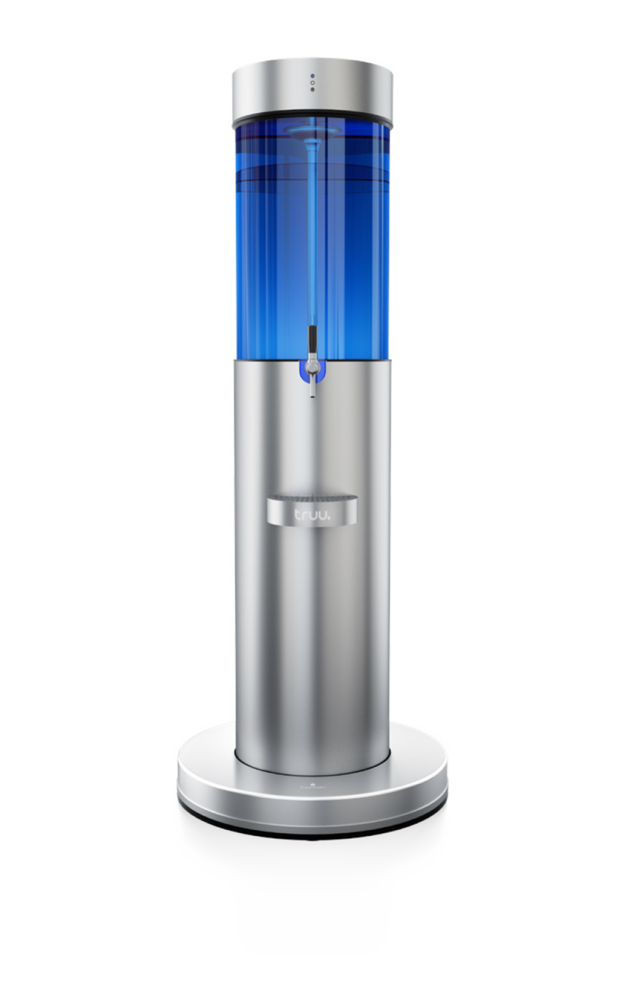
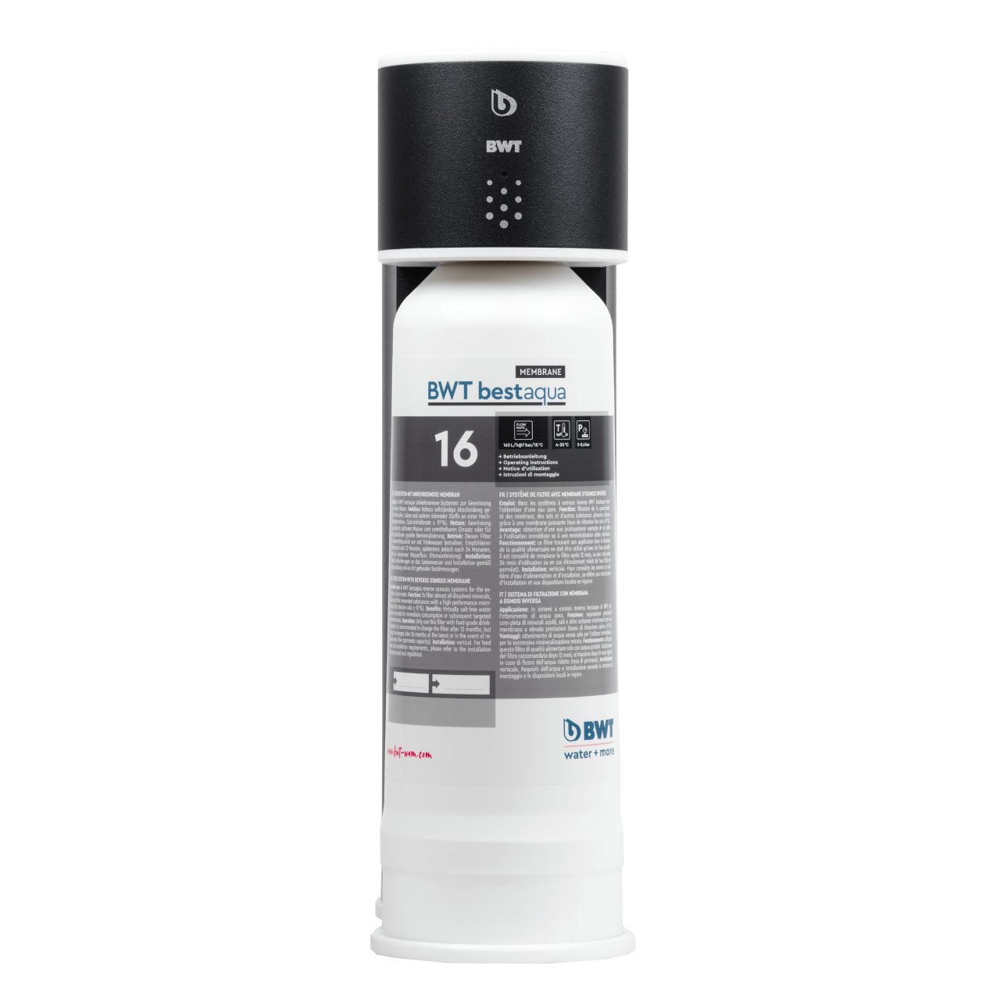
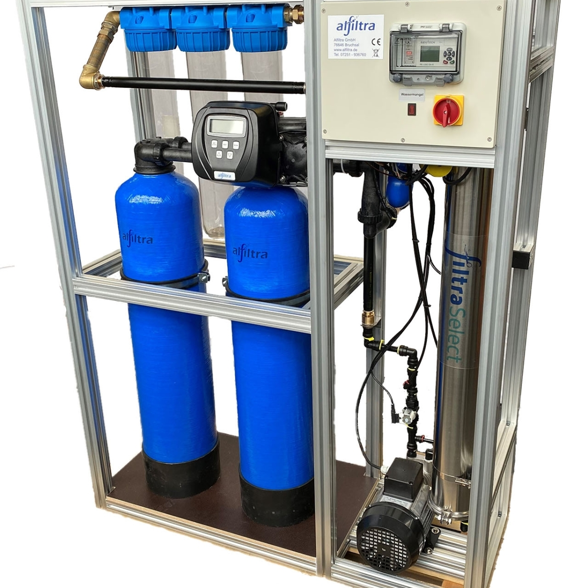
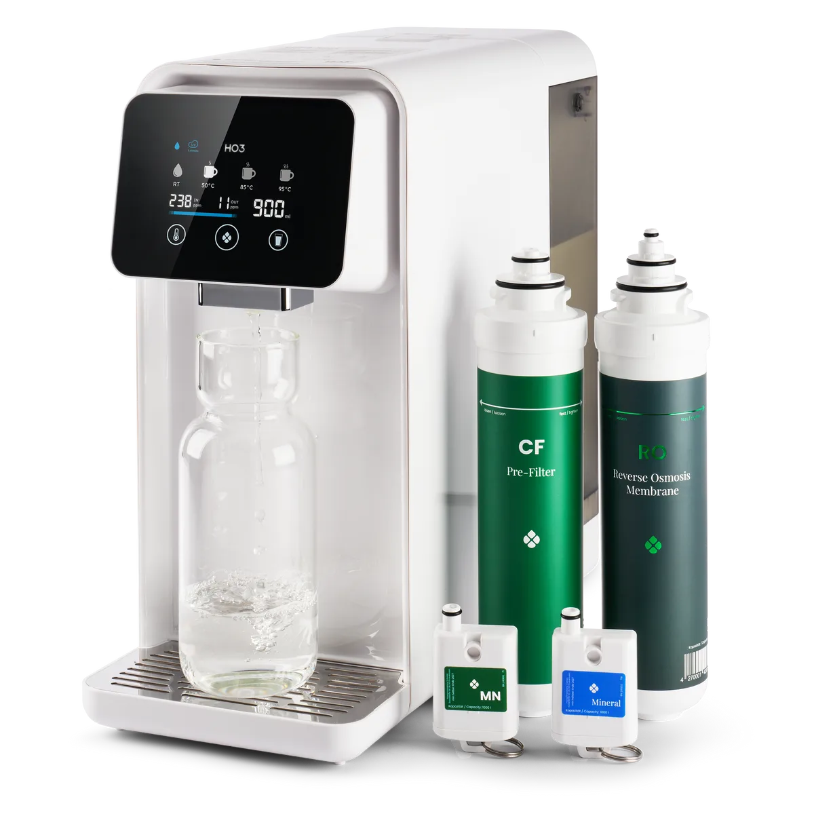
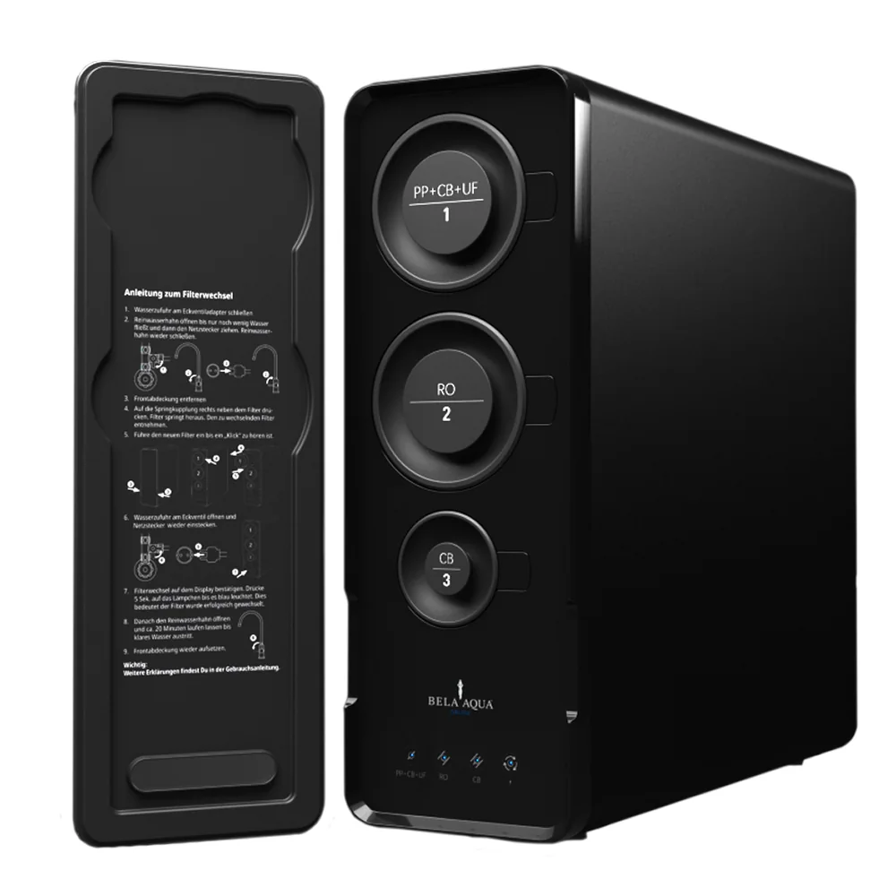
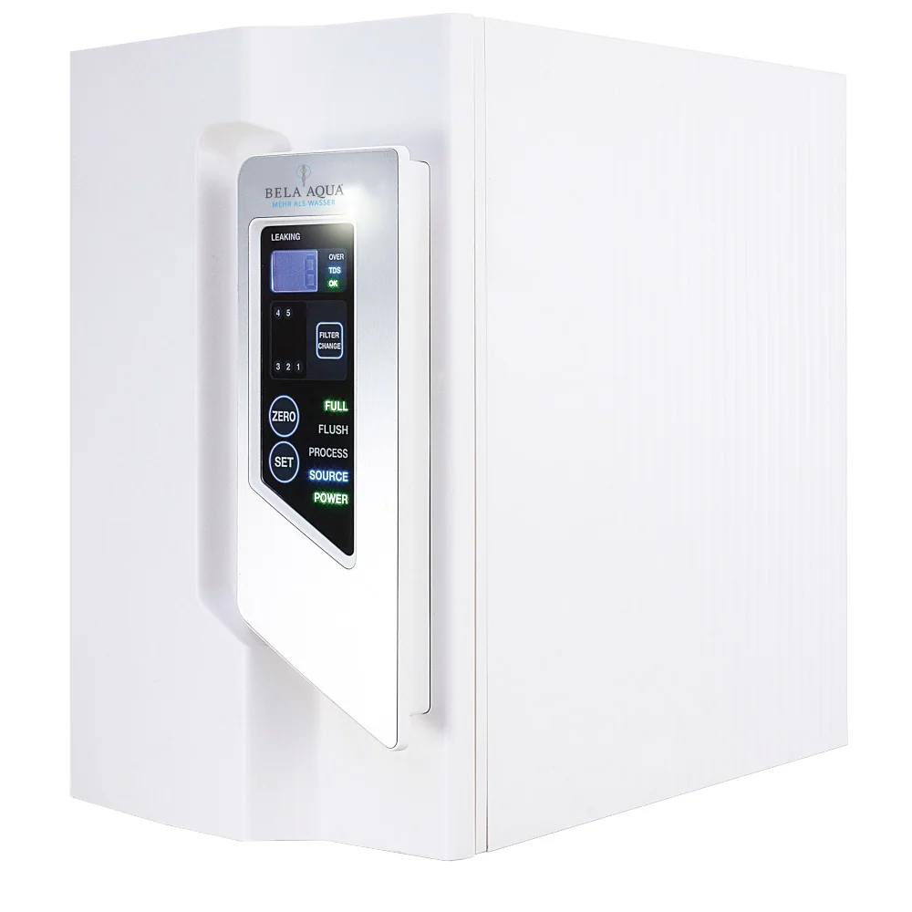
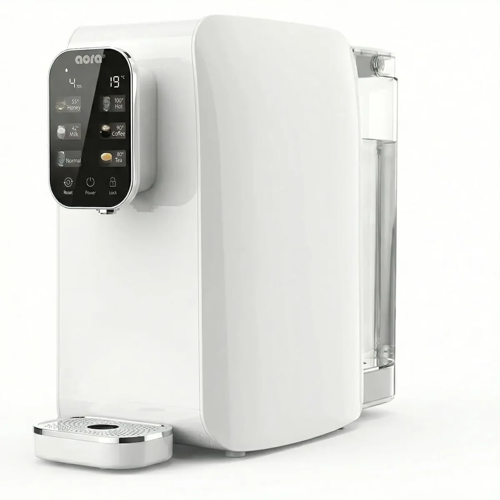
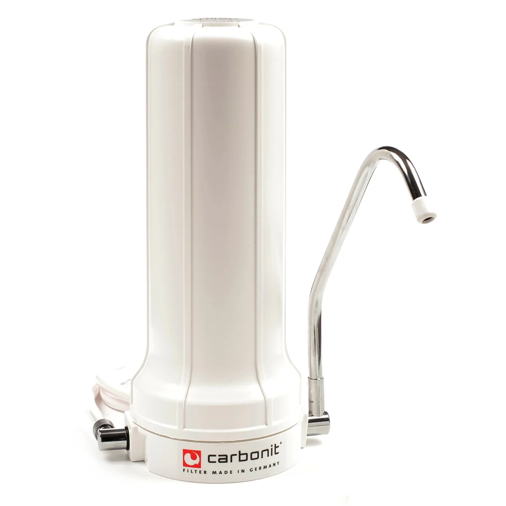

Water filtration products
Browse household water systems and appliances. Use filters or add up to three models to comparison.
104 Modelle
104 Produkte in der Datenbank


Bluewater
Spirit 300CP
1.910 €
Technologie: SuperiorOsmosis™ (Umkehrosmose)Reinigungsleistung: bis 99–99,7 % laut HändlerseiteTagesleistung: 2.521–3.380 l/Tag in der Tabelle; bis 3.800 l/Tag im Beschreibungstext



truu
fountain 3
Preis auf Anfrage
Einsatz: Unternehmen, Fitness, Gastronomie, Kliniken und PflegeInstallation: FestwasseranschlussReservoir: 85 Liter, Glas

MisterWater
Wasserfilteranlagen (Puria / Arctica / Silver Star / Futura)
Preis auf Anfrage
Hinweis: Die Quelle führt vier Modelle, kein offizielles Modell „Premium RO System“Modelle: Puria, Arctica, Silver Star und FuturaPuria: Auftisch; 8 Stufen; ca. 0,7 L/min; 25,3 × 36,4 × 40,4 cm; 7,5 kg

WERTACH
Pantera
Preis auf Anfrage
Produkttyp: Untertisch-GourmetwasseranlageTechnologie: Direct-Flow-UmkehrosmoseVarianten: Basic, Performance und Medical

OsmoFresh
Fusion Pro
1.290 €
Preis: 1.290 € (Herstellerseite bei Recherche)Produktnummer: ROFPEinsatz: Haushalt, 1–6 Personen

Greifenstein Wasserveredelung
INOX
Preis auf Anfrage
Bauart: Untertisch-Umkehrosmoseanlage mit VorratstankFilterwasser: 100–360 Liter pro TagWirkungsgrad: 50 % Abwasser laut Hersteller

Gewapur
Osmo Star 2.0
Preis auf Anfrage
Offizieller Modellname: Osmo Star 2.0; „RO Comfort“ ist auf der verlinkten Seite nicht aufgeführtTechnologie: Direct-Flow-UmkehrosmoseMembran: 800 GPD

Aqmos
AQ-RO 800 GPD
Preis auf Anfrage
Modellstatus: „AQ-RO 800 GPD“ ist auf der verlinkten aktuellen Kategorieseite nicht eindeutig ausgewiesenTechnologie: UmkehrosmoseNennleistung aus Modellbezeichnung: 800 GPD

Wasserhaus
ZEN FLOW
Preis auf Anfrage
Preis: 1.199 € (Herstellerseite bei Recherche)Bauart: Tankloses Direct-Flow-UnterbaugerätMembran: 800 GPD

myAqua
myAQUA 1900
Preis auf Anfrage
Einsatz: Süß- und MeerwasseraquaristikTagesleistung: bis 1.900 LiterDurchfluss: max. 1,32 L/min

Purway
PUR Booster Quick
309 €
Preis: 309 € (Herstellerseite bei Recherche)EAN: 4260303252520Filterstufen: 7

Osmounity
Direct Flow
Preis auf Anfrage
Produktgruppe: Aquaristik-FilteranlagenTechnologie: UmkehrosmoseBauart: Direct Flow

WasserWelt
WW Premium Direct Flow
Preis auf Anfrage
Modellstatus: Keine öffentlich verifizierbare offizielle Produktseite hinterlegtTechnologie: Umkehrosmose gemäß vorhandener ModellangabeBauart: Direct Flow gemäß vorhandener Modellangabe

BWT
AQA drink PRO 20
Preis auf Anfrage
Produktname: AQA drink Pro 20 CASProduktnummer: 826024Produkttyp: Leitungsgebundener Wasserspender

BWT
bestaqua ROC
Preis auf Anfrage
Technologie: UmkehrosmoseEinsatz: Gastronomie und HotellerieBauart: Kompaktes professionelles System

Grünbeck
GENO-OSMO-X
Preis auf Anfrage
Technologie: UmkehrosmoseEinsatz: Gewerbe und IndustrieSystem: Modular konfigurierbar

JUDO
i-fill
Preis auf Anfrage
Produktstatus: Direkte offizielle Modellseite in den bereitgestellten Quellen nicht vorhandenProdukttyp: Heizungsbefüllsystem gemäß vorhandener ModellangabeEinsatz: Heizungswasseraufbereitung

Alfiltra
RO Professional
Preis auf Anfrage
Technologie: UmkehrosmoseEinsatz: Gewerbe und professionelle AnwendungenBaureihe: Projekt- und leistungsabhängig

AQUION
Premium 7
Preis auf Anfrage
Produkttyp: WasserionisiererSerie: AQUION PremiumElektroden: 7

Quooker
Front + CUBE
Preis auf Anfrage
Produkttyp: Multifunktionale KüchenarmaturArmatur: Quooker Front mit Bedienung am AuslaufBasiswasser: Kalt und warm

BRITA
mypure P1
Preis auf Anfrage
Produkttyp: Untertisch-TrinkwasserfilterFilterkartusche: BRITA P1000Installation: Unter der Spüle

GROHE Blue
GROHE Blue Home
Preis auf Anfrage
Produkttyp: Küchen-WassersystemWasserarten: Still, medium und sprudelndFiltration: GROHE Blue Filter

Franke
Mythos Water Hub
Preis auf Anfrage
Varianten: All in One 6-in-1 und Sparkling 5-in-1Wasserarten: Kalt, warm, kochend, gekühlt, raumtemperiert und sprudelnd – variantenabhängigInstallation: Kompaktes Untertischsystem

BLANCO
BLANCO UNIT / DRINK.SYSTEMS
Preis auf Anfrage
Produkttyp: Modularer Küchen-Wasserplatz, kein einzelnes GerätKomponenten: Armatur oder DRINK.SYSTEM, Spüle, Abfall- und OrganisationssystemKonfiguration: Stile, Materialien und Einbauarten kombinierbar

Aqua Global
Flexible Touch
Preis auf Anfrage
Bauart: Mobile Auftisch-Wasserbar mit UmkehrosmoseWasseranschluss: Nicht erforderlichTemperaturen: Baby ca. 50 °C; Tea ca. 85 °C; Hot ca. 95 °C; Room ungekühlt

Bela Aqua
OBLIGE Directflow
Preis auf Anfrage
Bauart: Tanklose Direct-Flow-UmkehrosmoseanlageMembran: 800 GPD High Performance RODurchfluss: bis zu 2,1 L/min

AQUAPRO
High Flow 800 GPD Reverse Osmosis System
907 €
Nennleistung: 800 GPDFiltration: ACFS und zwei RO-ElementeMembranfeinheit: 0,0001 Mikron

Culligan
C2 Firewall® RO Water Dispenser
Preis auf Anfrage
Nutzerbereich: 1–30 PersonenFiltration: Direct-Flow-UmkehrosmoseHygiene: Firewall® UVC; laut Hersteller 99,99 % Schutz vor Viren und Bakterien

BLACKWATER
Drop
1.490 €
Produkttyp: Untertisch-Direct-Flow-UmkehrosmoseFilterstufen: 5Vorfilter: PCB 2-in-1: Aktivkohleblock-Sedimentfilter + Glyphosat-Einheit

WALUTEC
eL-Neró® smart + medic S
Preis auf Anfrage
Bauart: Mobiles Auftischsystem ohne FestwasseranschlussTechnologie: 4 Phasen mit 13 Filtrations- und AufbereitungsstufenRO-Membran: FILMTEC® TFC, 100 GPD, 0,0001 µm

WALUTEC
eL-Neró® speedflow medic S
Preis auf Anfrage
Bauart: Tankloses Untertisch-Direct-Flow-SystemTechnologie: 4 Phasen, bis zu 14 Filtrations- und AufbereitungsstufenRO-Membran: 700 GPD Hochleistungsmembran


Waterdrop
G5P500A Alkalische Umkehrosmoseanlage mit Wasserhahn
270 €
Modell: G5P500ABauart: Tanklose Untertisch-UmkehrosmoseanlageFiltration: 8-stufig, RO-Membran 0,0001 µm und alkalische Mineralisierung

Waterdrop
G5P700A Alkalischer Umkehrosmose Wasserfilter 700 GPD
370 €
Modell: G5P700ABauart: Tanklose Untertisch-UmkehrosmoseanlageFiltration: 8-stufig, RO-Membran 0,0001 µm und alkalische Mineralisierung

Waterdrop
G3P600 Mineralien Umkehrosmose Wasserfilter mit MNR35 Ersatzfilter
459 €
Modell: G3P600Bauart: Tanklose Untertisch-UmkehrosmoseanlageFiltration: 8-stufige tanklose Umkehrosmose-Filtration

Waterdrop
G3P600 Smart Untertisch Umkehrosmose Wasserfilter 600 GPD
429 €
Modell: G3P600Bauart: Tanklose Untertisch-UmkehrosmoseanlageFiltration: 8-stufige tanklose Umkehrosmose-Filtration

Waterdrop
G3P800 Mineralien Umkehrosmose Wasserfilter mit MNR35 Ersatzfilter
1.030 €
Modell: G3P800Bauart: Tanklose Untertisch-UmkehrosmoseanlageFiltration: 10-stufige tanklose Umkehrosmose-Filtration

Waterdrop
A1 Auftisch Umkehrosmose Wasserfilter mit UV
600 €
Modell: A1Bauart: Auftisch-Umkehrosmoseanlage ohne FestinstallationFiltration: Mehrstufige RO-Filtration mit dualer UV-Behandlung

Waterdrop
K6 Smart Umkehrosmose Wasserfilter mit Heißwasser
749 €
Modell: K6Bauart: Tanklose Untertisch-UmkehrosmoseanlageFiltration: 5-stufige Umkehrosmose-Filtration

Waterdrop
C1H Auftisch Umkehrosmose Wasserfilter Heißwasser
270 €
Modell: C1HBauart: Auftisch-Umkehrosmoseanlage ohne FestinstallationFiltration: 6-stufig, RO-Membran 0,0001 µm

Waterdrop
X12 Alkalischer Tankloser Umkehrosmose Wasserfilter 1200 GPD
1.299 €
Modell: X12Bauart: Tanklose Untertisch-UmkehrosmoseanlageFiltration: 11-stufig, RO-Membran 0,0001 µm, UV und alkalische Remineralisierung

Waterdrop
X16 Alkalischer Mineralisierender Umkehrosmose Wasserfilter
1.999 €
Modell: X16Bauart: Tanklose Untertisch-UmkehrosmoseanlageFiltration: 11-stufig, RO-Membran 0,0001 µm und alkalische Remineralisierung

Waterdrop
G3P800 Tankloser Umkehrosmose Wasserfilter 800 GPD
999 €
Modell: G3P800Bauart: Tanklose Untertisch-UmkehrosmoseanlageFiltration: 10-stufige tanklose Umkehrosmose-Filtration

Waterdrop
X8 Tankloser Untertisch Umkehrosmose Wasserfilter 800 GPD
799 €
Modell: X8Bauart: Tanklose Untertisch-UmkehrosmoseanlageFiltration: 9-stufig, RO-Membran 0,0001 µm

Waterdrop
G2P600 Umkehrosmose-Wasserfiltrationssystem für Zuhause
330 €
Modell: G2P600Bauart: Tanklose Untertisch-UmkehrosmoseanlageFiltration: MRO: RO-Membran, PP-Sediment, Aktivkohle und PET-Faltenfilter; CF: PP-Sediment und Aktivkohle

Waterdrop
C1SL Alkalisches Umkehrosmose-System für die Arbeitsplatte
259 €
Modell: C1SLBauart: Auftisch-Umkehrosmoseanlage ohne FestinstallationFiltration: Umkehrosmose mit alkalischer Mineralisierung

Waterdrop
K19-HG Instant Hot Mineralisiertes RO-Wassersystem
309 €
Modell: K19-HGBauart: Auftisch-Umkehrosmoseanlage ohne FestinstallationFiltration: 5-in-1-Filter mit RO, Erhitzung und Mineralisierung

Waterdrop
A2G Auftisch-Umkehrosmoseanlage mit Heiß- & Kaltwasser
509 €
Modell: A2GBauart: Auftisch-Umkehrosmoseanlage ohne FestinstallationFiltration: 6-stufige RO-Filtration mit alkalischer Remineralisierung

Waterdrop
X-Serie Umkehrosmose-System, X8-F2
827 €
Modell: X8Bauart: Tanklose Untertisch-UmkehrosmoseanlageFiltration: 9-stufig, RO-Membran 0,0001 µm

Waterdrop
X8 Tankloser Untertisch Umkehrosmose Wasserfilter 800 GPD mit F3 Ersatzfilter
917 €
Modell: X8Bauart: Tanklose Untertisch-UmkehrosmoseanlageFiltration: 9-stufig, RO-Membran 0,0001 µm

Arktisquelle
Wasserfilter
1.199 €
Bauart: Auftischsystem ohne FestwasseranschlussFiltration: 7-Stufen SeptaTech®Membran: Molekularmembran / Umkehrosmose, 0,0001 µm

HO3 Filter
Home One
Preis auf Anfrage
Bauart: Auftisch-UmkehrosmoseanlageFiltration: Umkehrosmose; Filterleistung laut Hersteller nach NSF/ANSI 58 geprüftMineralisierung: Einsetzbarer Mineralfilter

Aqua Global
Mini Touch
795 €
Filterwechsel: Composite 6–12 Monate; Postfilter 6–12 Monate; RO-Membran 12–24 Monate; UV 60 MonateTemperaturen: Baby ca. 50 °C; Tee ca. 85 °C; Heiß ca. 95 °C; RaumtemperaturTankgröße: 2,50 Liter (innen)

Aqua Global
Mini Touch PRO – Black
1.195 €
Filterwechsel: Composite 6–12 Monate; RO-Membran 12–24 Monate; UV 60 MonateTemperaturen: Baby 45–50 °C; Tee 80–85 °C; Heiß 90–95 °C; Raumtemperatur; Kalt 6–12 °CFilterleistung: 15–25 l/h; Zulaufwasser 10–38 °C

Aqua Global
Basic
895 €
Filterwechsel: PC-C 6–12 Monate; RO-Membran 18–36 MonateTemperaturen: RaumtemperaturTankgröße: kein Tank | Direct Flow

Aqua Global
Sparkling
1.795 €
Filterwechsel: Nano-Silver-Carbon 6–12 Monate; UV 6–12 MonateTemperaturen: Sprudel, gekühlt, still gekühlt und RaumtemperaturTankgröße: kein Tank | Direct Flow

Aqua Global
Sparkling Pro
2.295 €
Filterwechsel: PC-C 6–12 Monate; RO-Membran 18–36 Monate; UV 6–12 MonateTemperaturen: Sprudel, gekühlt, still, Raumtemperatur und heißTankgröße: kein Tank | Direct Flow

Aqua Global
Hydrogenflasche Glas schwarz
169 €
Produktart: Tragbare WasserstoffflascheTechnologie: Herstellerangaben auf der offiziellen ProduktseitePreisstatus: Offizieller Shoppreis bei Recherche

Bela Aqua
Bela Aqua OBLIGE Minerale | Directflow-Osmoseanlage
Preis auf Anfrage
RO-Membrane: 800 GPDDurchflussrate: 2,1 l/minProduktmaße B x H x T: 14 x 40,5 x 43 cm

Bela Aqua
Bela Aqua Evolution Classic | Osmoseanlage mit Tank
Preis auf Anfrage
Bauart: Untertisch-Umkehrosmoseanlage mit VorratstankSteuerung: Computergesteuerte 9-in-1-Technologie mit LCD-DisplayVorfilter: Sedimentfilter ST-05

Bela Aqua
Hydrogen Trinkflasche
97 €
Produktart: Tragbare Wasserstoff-TrinkflascheInhalt: 450 mlGewicht: 318 g

HappyFilter
HappyFilter One - DER Wasserspender für Zuhause
1.090 €
3-in-1 Wassersystem: Sprudel-, Kalt- und Heißwasser – alles in einem kompakten Gerät. Ideal für Küche, Büro oder Ferienwohnung.Versand: Versandkostenfrei ab 39€ innerhalb DeutschlandsRückversand: 30 Tage Geld-Zurück Garantie

SPRUDELUX
SPRUDELUX® POWER SODA - Premium Untertisch-Sprudelanlage
1.167 €
Kühlkapazität: 20 L/h bei 10 °C ΔtWassertemperatur (kalt & Sprudel): 4–12 °CKühltechnologie (patentiert): Direct Chill COOL-HYBRID®

SPRUDELUX
SPRUDELUX® INOX SILENT - Premium Sprudelanlage | hoher CO2 Gehalt | geräuscharm | Edelstahl
1.238 €
Artikelnummer: 21869Schlagwörter: PalettenversandArmatur: ohne Armatur oder 5-Wege STATEMENT Edelstahl oder 5-Wege STATEMENT Schwarz oder 5-Wege Isabella L Schwarz oder 5-Wege Isabella L Edelstahl oder 5-Wege Isabella L Chrom oder 5-Wege Nobius C Chrom oder 5-Wege Nobius U Chrom oder 5-Wege Nobius L Chrom oder 5-Wege CUCINA UNICA C-Auslauf oder 5-Wege CUCINA ESTETICA U-Auslauf oder 3-Wege Zusatzarmatur Lara U Edelstahl oder 3-Wege Zusatzarmatur Lara C Edelstahl

SPRUDELUX
SPRUDELUX JUMAN SUPREME – Premium Umkehrosmoseanlage mit Sprudel & Heißwasserfunktion | Quick Change Filter & UVC-LED Technologie | mit Festwasseranschluss
850 €
Nennheizleistung: 2100 W (220–240 V, während Heizvorgang)Kompressorleistung: 72 WHeißwassertemperatur: 95 °C

SPRUDELUX
SPRUDELUX Pro Touch - Premium Umkehrosmoseanlage mit Sprudel & Heißwasserfunktion | Quick Change Filter & UVC-LED Technologie | Tank bzw. Festwasseranschluss
1.359 €
Nennheizleistung: 2200 W (während Heizvorgang)Nennkühlleistung: 120 W (während Kühlung)Heißwasser-Kapazität: 18 L/h (≥90 °C)

SPRUDELUX
SPRUDELUX® POWER SODA - Premium Auftisch-Sprudelanlage
1.572 €
Artikelnummer: 20741Schlagwörter: PalettenversandFarbe Anlage: Weiß oder Schwarz

SPRUDELUX
SPRUDELUX® POWER SODA Osmose - Premium Untertisch-Sprudelanlage
1.644 €
Kühlkapazität: 20 L/h bei 10 °C ΔtWassertemperatur (kalt & Sprudel): 4–12 °CKühltechnologie (patentiert): Direct Chill COOL-HYBRID®

SPRUDELUX
SPRUDELUX® NUOVO - Premium Umkehrosmoseanlage | hoher CO2 Gehalt | geräuscharm | Edelstahl
1.990 €
Artikelnummer: 22746Schlagwörter: PalettenversandArmatur: ohne Armatur oder 5-Wege STATEMENT Edelstahl oder 5-Wege STATEMENT Schwarz oder 5-Wege Isabella L Schwarz oder 5-Wege Isabella L Edelstahl oder 5-Wege Isabella L Chrom oder 5-Wege CUCINA UNICA C-Auslauf oder 5-Wege CUCINA ESTETICA U-Auslauf oder 3-Wege Zusatzarmatur Lara U Edelstahl oder 3-Wege Zusatzarmatur Lara C Edelstahl

SPRUDELUX
SPRUDELUX® ULTRA FLAT - Premium Sprudelanlage | nur 10,5 cm flach | hoher CO2 Gehalt | geräuscharm | Edelstahl
1.316 €
Artikelnummer: 22750Schlagwörter: PalettenversandArmatur: ohne Armatur oder 5-Wege STATEMENT Edelstahl oder 5-Wege STATEMENT Schwarz oder 5-Wege Isabella L Schwarz oder 5-Wege Isabella L Edelstahl oder 5-Wege Isabella L Chrom oder 3-Wege Zusatzarmatur Lara U Edelstahl oder 3-Wege Zusatzarmatur Lara C Edelstahl

AORA
AORA GT600 Umkehrosmose Wasserfilter ohne Tank | 1,57 L/Min. Durchfluss | inkl. 3 Wege-Edelstahl- Wasserhahn | Quick Change Filter | geprüfte Qualität
315 €
Artikelnummer: 11660Armatur: STATEMENT Spiralfeder oder STATEMENT Spiralfeder Schwarz oder GIULIA C-Auslauf Edelstahl oder GIULIA L-Auslauf Edelstahl oder GIULIA U-Auslauf Edelstahl oder GIULIA C-Auslauf Chrom oder NORA Brause Edelstahl Matt oder NORA Brause Schwarz oder ALPINA Edelstahl gebürstet oder LUNA Chrom oder SOFIA Einweg Armatur oder SOFIA Schwarz Einweg Armatur oder VANTO L-Auslauf Edelstahl oder VANTO C-Auslauf Edelstahl oder VANTO U-Auslauf EdelstahlAusgabearten: Still

AORA
AORA W12 Auftisch Osmoseanlage mit 6 Temperaturstufen (~15-100°C) | kein Wasseranschluss nötig | 5 stufige Filterung | kalkfreies Trinkwasser | Mobile Umkehrosmoseanlage
350 €
Artikelnummer: 6255Farbe Anlage: Weiß oder SchwarzAusgabearten: Still oder Still gekühlt oder Heißwasser

AORA
AORA W23 Auftisch Osmoseanlage mit 6 Temperaturstufen (~15-100°C) | mit Tank | 5 stufige Filterung | kalkfreies Trinkwasser | Mobile Umkehrosmoseanlage | Wasserstoff-Generator
500 €
Artikelnummer: 20904Farbe Anlage: Weiß oder SchwarzAusgabearten: Still oder Still gekühlt

stillundlaut
STILLUNDLAUT HOME SODA – Premium Untertisch-Umkehrosmoseanlage | Sprudel & Kühlung | nur 10 cm hoch | Edelstahl
3.570 €
Schlagwörter: PalettenversandArmatur: ohne Armatur oder 5-Wege STATEMENT Edelstahl oder 5-Wege STATEMENT Schwarz oder 5-Wege Isabella L Schwarz oder 5-Wege Isabella L Edelstahl oder 5-Wege Isabella L Chrom oder 5-Wege CUCINA UNICA C-Auslauf oder 5-Wege CUCINA ESTETICA U-Auslauf oder 3-Wege Zusatzarmatur Lara U Edelstahl oder 3-Wege Zusatzarmatur Lara C EdelstahlCo2 Flasche: Ohne Co2 Flasche oder 2KG oder 6KG oder 10KG


Osmotech
Aquaristik Osmoseanlage Profi 50 GPD
70 €
Geeignet für: AquaristikHöhe: 160mmLänge: 360mm

Osmotech
Aquaristik Osmoseanlage Hobby 50 GPD
50 €
Geeignet für: AquaristikHöhe: 80mmLänge: 380mm


ROWA 4 you
H2O Rowa Select | 8 l Tank
1.450 €
Artikel-Nr.: A002270Hersteller: ROWA 4 youTyp: Wasserfilter > Umkehrosmoseanlage > Untertisch Osmoseanlage

ROWA 4 you
H2O Economy 3+ blue
1.150 €
Artikel-Nr.: A001561Hersteller: ROWA 4 youTyp: Wasserfilter > Umkehrosmoseanlage > Untertisch Osmoseanlage

Wasserladen
WP-A01 | All in One Umkehr Osmose Auftischfilter
599 €
Artikel-Nr.: A002362Hersteller: Hurom Europe GmbHTyp: Wasserfilter > Umkehrosmoseanlage > Auftisch Osmoseanlage

CARBONIT
SANUNO Classic
162 €
Artikel-Nr.: A000513Hersteller: Carbonit Filtertechnik GmbHTyp: Wasserfilter > Aktivkohlefilter > Auftischfilter

CARBONIT
SANUNO Grande Sparset
425 €
Artikel-Nr.: A001679Hersteller: Carbonit Filtertechnik GmbHTyp: Wasserfilter > Aktivkohlefilter > Auftischfilter